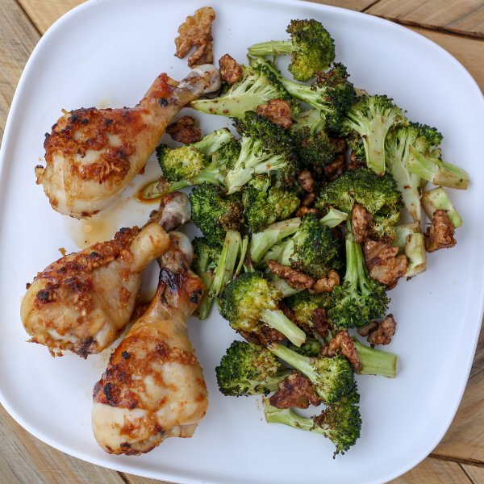

Sheet Pan Asian Chicken Drumsticks with Broccoli & Spiced Walnuts

Total Time
40 min
Nutrition (Per Serving)
699.6 kcalCalories
58.4 gProtein
17.1 gCarbs
44.4 gFat
Full nutrition table
| Calories | 699.6 kcal |
| Total fat | 44.4 g |
| Saturated fat | 9 g |
| Trans fat | 0.1 g |
| Cholesterol | 260.8 mg |
| Sodium | 332.7 mg |
| Carbohydrates | 17.1 g |
| Fiber | 4.1 g |
| Sugars | 7.1 g |
| Protein | 58.4 g |
| Potassium | 1096.5 mg |
| Calcium | 97.4 mg |
| Iron | 3.6 mg |
| Vitamin A | 696.5 IU |
| Vitamin C | 78.1 mg |
| Vitamin D | 5.7 IU |
Cookware
Ingredients
- 2 crownsbroccoli
- 2 ½ lbchicken drumsticks
- 4 clovesgarlic
- 2 (1 inch) piecesginger root
- ⅔ cupwalnuts
- brown sugar
- cayenne pepper
- chili-garlic sauce
- cinnamon, ground
- soy sauce
- toasted sesame oil
Steps
- Preheat oven to 450°F, position a rack in the center position and another in the bottom position. Line two large baking sheet pans with aluminum foil (optional).
- Peel and mince garlic and ginger; transfer to a large bowl.2 (1 inch) pieces ginger root
4 cloves garlic - Add soy sauce, oil, chili-garlic sauce, and sugar to the bowl and whisk to combine the marinade. Add the chicken and toss to coat.¼ cup soy sauce
4 tsp toasted sesame oil
4 tsp chili-garlic sauce
2 tsp brown sugar
2 ½ lb chicken drumsticks - Spread chicken out in a single layer on a prepared sheet pan. Place on the bottom rack of the oven and roast until the chicken is cooked through, 30-35 minutes. Reserve marinade.
- Wash broccoli and cut into small, bite-sized florets. Thinly slice the thicker stem. Transfer to a medium bowl.2 crowns broccoli
- Toss broccoli with soy sauce and oil. Spread out in a single layer on the other baking sheet and place in the oven for 5-8 minutes while you prepare the nuts.2 tsp toasted sesame oil
2 tsp soy sauce - Remove chicken from the oven. Use tongs to flip each drumstick. Spoon on remaining marinade, and return to the oven.
- Roughly chop walnuts. In a small bowl, toss walnuts with water to moisten.⅔ cup walnuts
1 tbsp water - In another small bowl, stir together sugar, cinnamon, and cayenne pepper. Toss moistened walnuts in the spice mixture.2 tsp brown sugar
¼ tsp cinnamon, ground
⅛ tsp cayenne pepper - Remove the broccoli pan from the oven and sprinkle the walnuts on top. Return the pan to the oven for an additional 5-8 minutes or until broccoli is tender-crisp, and walnuts are toasted.
- To serve, place chicken, broccoli, and walnuts on a plate. Enjoy!